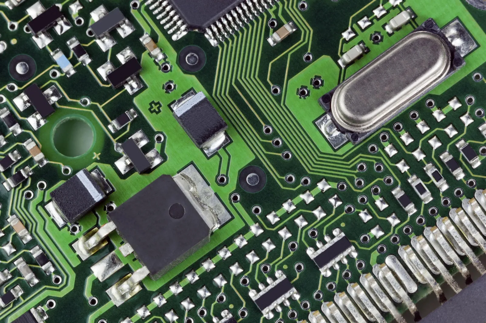

GEN-Z
Cuatro acciones de temas de futuro, elegidas por momentum.
Estrategia temática de momentum: cada mes elijo las 4 acciones con mayor momentum entre las empresas de los grandes índices que pertenecen a temas de futuro.
5/5 · perfil muy agresivo · con mi dinero desde 2024
En fase de lanzamiento
La opero con mi dinero, pero lleva menos de cinco años con dinero real, ha caído más de un 40 % y su método acaba de cambiar. Qué significa esta fase.
En euros, con dividendos y sin comisiones ni impuestos. Posiciones publicadas valoradas a precio de cierre; no es el extracto de una cuenta. La caída se mide con datos de fin de mes: dentro de un mes puede ser mayor.

100 € desde 2024, y lo que hubo que aguantar
GEN-Z, mes a mes
| ene | feb | mar | abr | may | jun | jul | ago | sep | oct | nov | dic | Año | |
|---|---|---|---|---|---|---|---|---|---|---|---|---|---|
| 2026 | +7,2 | −4,5 | −5,6 | +25,9 | −4,1 | +16,2 | −31,9 | −2,5 | +29,4 | −33,0 | · | · | −22,1 |
| 2025 | −0,7 | −4,6 | +4,8 | +16,2 | +40,0 | −7,6 | +27,3 | +10,2 | +48,0 | +36,5 | −33,5 | −7,8 | +159,2 |
| 2024 | +6,0 | +30,3 | +1,2 | −6,4 | +10,9 | +5,2 | −11,8 | +15,2 | +0,2 | +1,2 | +15,1 | +34,9 | +144,6 |
Rentabilidad de cada mes, en %. Verde, mes positivo; rojo, negativo; cuanto más intenso, mayor. «Año»: acumulado de los meses con dato.
Versión nueva del método. Empieza en noviembre de 2026. Todo lo de arriba es de la versión anterior. El historial de la nueva irá aquí debajo, separado, cuando cierre su primer mes.
Cómo decide
- Solo son candidatas las acciones que forman parte de los mismos índices que GEDA, con más de tres meses dentro, y que pertenecen a uno de los temas de la estrategia: semiconductores, software y ciberseguridad, videojuegos, metales críticos, energía para la IA, salud con IA, aeroespacial y defensa, y robótica/IA y cuántica; en estos dos últimos temas, las candidatas se toman de las mayores posiciones de sus ETF de referencia.
- La lista de candidatas sale sola cada mes de esa regla; no la elijo yo.
- Cada mes un algoritmo mide el momentum de todas las candidatas en los últimos 24 meses.
- Las cuatro con mayor momentum forman la cartera del mes, con dos del mismo tema como máximo.
- Las 4 llevan el mismo importe, un 25 % cada una, hasta el día 1 siguiente.
- Si hay cambios, vendo lo que sale y compro lo que entra; si no, no hago nada.
| Bloque | Peso |
|---|---|
| Acciones de los grandes índices de EE. UU. y Europa que pertenecen a los temas de la estrategia (máximo 2 por tema) | 4 posiciones, 25 % cada una |
Cuándo lo pasa mal
- Solo cuatro acciones de pocas temáticas: movimientos muy bruscos y muy concentrados.
- Sufre con giros bruscos tras una gran subida y con caídas prolongadas que tardan en recuperarse.
- El historial con dinero real es corto, desde enero de 2024, y dos años concentran gran parte del resultado. Además, es de la versión anterior del método.
Lo práctico
- Cada cuánto la miro: Cada mes: el día 1 miro el informe y cambio solo lo que indique.
- Con qué se hace: Acciones sueltas de EE. UU. y Europa.
- Importe: Unos 4.000 € con bróker de 1 € por operación (unos 4.500 € con uno de unos 3 €): unos 1.000 € por posición, con unas 15 operaciones al año.
Qué tengo ahora
Cartera de noviembre de 2026. Los suscriptores la reciben el día 1; la web la recoge entre el 10 y el 15 de cada mes.
| Bloque | Posición en noviembre de 2026 | En cartera desde |
|---|---|---|
| Cartera de 4 posiciones | AMD | oct 2026 |
| Cartera de 4 posiciones | CRL | nov 2026 |
| Cartera de 4 posiciones | CRWD | nov 2026 |
| Cartera de 4 posiciones | MU | nov 2026 |
Últimos seis meses
Qué entró y qué salió cada día 1, y cómo acabó el mes.
| Mes | Cambio el día 1 | Resultado del mes | Informe |
|---|---|---|---|
| nov 2026 | Entra MU, CRWD, CRL · Sale TER, FORM, INTC | en curso | informe |
| oct 2026 | Entra AMD · Sale LRCX | −33,00 % | informe |
| sep 2026 | Sin cambios | +29,38 % | informe |
| ago 2026 | Sin cambios | −2,55 % | informe |
| jul 2026 | Entra LRCX · Sale PLS.AX | −31,95 % | informe |
| jun 2026 | Entra INTC · Sale UAMY | +16,19 % | — |
Lo que he cambiado en GEN-Z
Las acciones candidatas pasan a salir de una regla, con dos por tema como máximo
Qué hacía antes. El universo era una lista de unas 100 empresas agrupadas por temas que elegía yo y actualizaba de vez en cuando. Incluía muchas empresas pequeñas y muy volátiles. Además, sin límite por tema, GEN-Z acabó desde julio de 2026 con las cuatro acciones en el mismo sector: cuando cayeron los semiconductores, cayeron las cuatro.
Qué hace ahora. Solo son candidatas las acciones que forman parte de los mismos índices que GEDA, con más de tres meses dentro, y que pertenecen a uno de los temas de la estrategia: semiconductores, software y ciberseguridad, videojuegos, metales críticos, energía para la IA, salud con IA, aeroespacial y defensa, y robótica/IA y cuántica; en estos dos últimos temas, las candidatas se toman de las mayores posiciones de sus ETF de referencia. Compro las cuatro con más momentum, un 25 % cada una, con dos del mismo tema como máximo para no concentrar toda la cartera en uno solo.
El historial. Este cambio es más profundo que el de GEDA. Al exigir que las empresas estén en un índice grande, salen las compañías pequeñas que protagonizaron la versión anterior. La GEN-Z actual es una estrategia distinta: las cifras de esta página, hasta octubre de 2026, son de la versión anterior y no dicen nada de la nueva. La cartera de noviembre de 2026 es la primera con la regla nueva; su historial empieza ahí y lo publico separado del anterior. Sigue siendo una estrategia muy agresiva, con caídas posibles del 30 % o más.
Las posiciones de GEN-Z, cada día 1
Un correo al mes con qué tengo en cada una de las seis estrategias, qué cambio y cómo fue el mes anterior. Lo lees y decides tú.
- Es gratis. Solo tu nombre y tu correo, sin tarjeta.
- Un correo al mes, el día 1. Sin ofertas ni cursos.
- Baja con un clic desde cualquier correo.
- Primero en tu correo: la cartera llega el día 1; la web la recoge a mediados de mes, entre el 10 y el 15.
Antes de apuntarte puedes ver los informes ya enviados.
Al suscribirte aceptas la política de privacidad. El formulario lo gestiona Brevo.